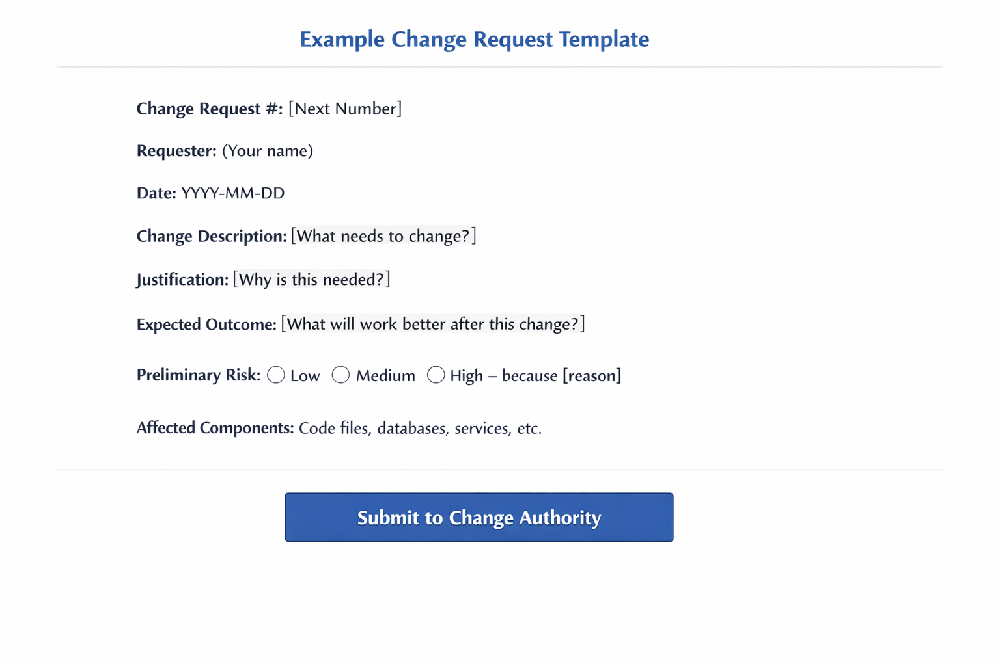

When you create a change request (using a tool like Jira, ServiceNow, or a standardized form), you must include the following four elements:
Note: In formal change management systems, these fields are captured on standardized forms to ensure consistency across all requests.
All changes must enter the process through a formal Change Request. This ensures that every proposal is documented, traceable, and contains enough information for initial evaluation.
## Change Request #: [Next Number] **Requester**: (Your name) **Date**: YYYY-MM-DD **Change Description**: [What needs to change?] **Justification**: [Why is this needed?] **Expected Outcome**: [What will work better after this change?] **Preliminary Risk**: ( ) Low ( ) Medium ( ) High - because [reason] **Affected Components**: [Code files, databases, services, etc.]

Change Request # | Requester | Date | Description | Justification | Expected Outcome | Risk | Affected Components
Image placeholder: Insert change request template screenshot hereSubmit your completed request to the designated Change Authority (e.g., your Project Manager, Scrum Master, or the Change Advisory Board portal). In Agile teams, this may mean adding it as a user story to the product backlog for prioritization.
1. Change Management in Software Projects (TMS Outsource, 2025) - Section: "How is a Change Request Submitted"
https://tms-outsource.com/blog/posts/what-is-change-management-in-software-projects/
Specifically, this section states the request should include: "what needs to change, why it needs to change, the expected outcome, and a preliminary risk assessment"
2. Change Management in Software Development Projects: A Comprehensive Guide (Teamhub, 2024) - Section: "Identifying the Need for Change"
https://teamhub.com/blog/change-management-in-software-development-projects-a-comprehensive-guide/